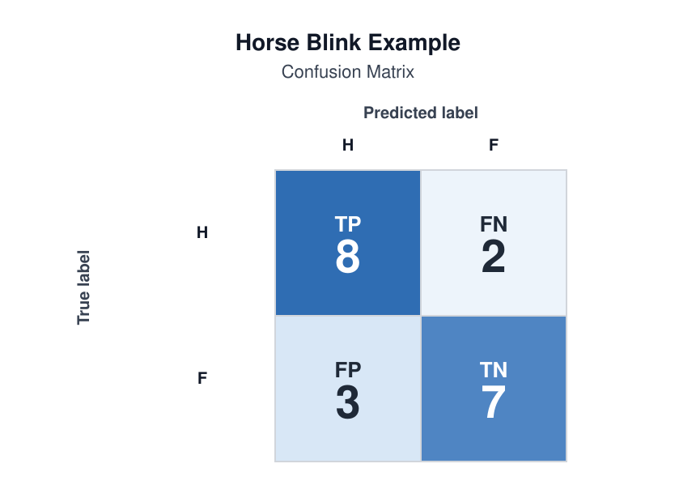
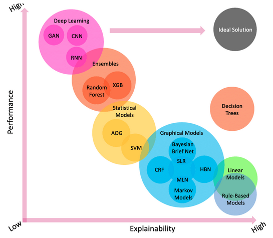

Checking What Your Model Learned
Last updated on 2026-04-13 | Edit this page
Overview
Questions
- Which metric should I choose before training a model?
- How do I tell whether a model is useful, overfit, or misleading?
- How do I evaluate results responsibly and communicate them clearly?
Objectives
- Choose one primary metric that matches the task and the cost of error.
- Interpret train/test results using simple diagnostics.
- Use task-appropriate evaluation views such as residuals or confusion matrices.
- Document limitations, subgroup concerns, and responsible claims.
Evaluation starts before the model is trained
The evaluation metric should be chosen before training. If you wait until after seeing the results, it becomes too easy to switch to whichever metric looks best.
Final evaluation should also be planned before model tuning begins. If possible, leave an independent test set untouched during model development, and use only training and validation data to choose or adjust the model. That way, the final test result is a more honest check of generalisation.
The first evaluation question is therefore not “what score did I get?” It is “what kind of error matters in this problem?”
Why evaluation needs context
A model can sound impressive on paper and still fail badly in practice.
For example, an automated sports camera may report high tracking accuracy during testing, but still fail in a real match if it follows the wrong object when conditions change. In that case, the headline score hides the fact that the system is not solving the real problem in context.
That is why evaluation should always connect three things:
- the metric;
- the kind of mistake being made;
- the real use of the model.
Choosing a primary metric
Regression

- MAE measures average absolute error and is often the easiest to explain.
- RMSE penalises large errors more strongly.
- R^2 summarises explained variance but is often overinterpreted.
For mixed-ability teaching, MAE is usually the safest first choice.
What the regression metrics actually compute
\[ \mathrm{MAE} = \frac{1}{n} \sum_{i=1}^{n} |y_i - \hat{y}_i| \]
\[ \mathrm{RMSE} = \sqrt{\frac{1}{n} \sum_{i=1}^{n} (y_i - \hat{y}_i)^2} \]
\[ R^2 = 1 - \frac{\sum_{i=1}^{n} (y_i - \hat{y}_i)^2}{\sum_{i=1}^{n} (y_i - \bar{y})^2} \]
Interpretation:
- MAE tells you the average absolute size of the error in the original units;
- RMSE penalises large errors more strongly because errors are squared before averaging;
- \(R^2\) compares the model against a simple mean-value baseline and measures how much of the variation in the target is captured by the model;
- if RMSE is much larger than MAE, a few large mistakes may be driving the result.
Classification
- Accuracy is simple, but can be misleading with imbalance.
- Precision matters when false positives are costly.
- Recall (True Positive Rate, or Sensitivity) matters when false negatives are costly.
- F1 score balances precision and recall when both matter.
For a first pass, commit to one main metric and explain why your problem makes that metric sensible.
What the classification metrics actually mean
For a binary problem, start from the confusion matrix:
- true positives (TP): predicted positive and actually positive;
- false positives (FP): predicted positive but actually negative;
- false negatives (FN): predicted negative but actually positive;
- true negatives (TN): predicted negative and actually negative.
Then:
\[ \mathrm{Accuracy} = \frac{TP + TN}{TP + TN + FP + FN} \]
\[ \mathrm{Precision} = \frac{TP}{TP + FP} \]
\[ \mathrm{Recall} = \frac{TP}{TP + FN} \]
\[ \mathrm{F1} = 2 \times \frac{\mathrm{Precision} \times \mathrm{Recall}}{\mathrm{Precision} + \mathrm{Recall}} \]
Interpretation:
- use accuracy when classes are reasonably balanced and the main goal is overall correctness;
- use precision when false positives are costly;
- use recall when missing a positive case is costly;
- use F1 when both precision and recall matter and you want one summary number.
Clustering
- Inertia describes how tightly grouped the clusters are.
- Silhouette score gives a rough sense of separation between clusters.
These scores should be treated as rough guides. In many real projects, the more important question is whether the grouping is useful for the scientific or operational purpose.
A small worked example before coding
Before opening a notebook, it helps to see what these metrics mean on a tiny example.
Classification example
Suppose a model predicts whether a sample is positive or negative, and the results are:
| Predicted positive | Predicted negative | |
|---|---|---|
| Actual positive | 8 | 2 |
| Actual negative | 3 | 7 |
So:
- \(TP = 8\)
- \(FN = 2\)
- \(FP = 3\)
- \(TN = 7\)
Then:
- accuracy \(= \frac{8 + 7}{20} = 0.75\)
- precision \(= \frac{8}{8 + 3} \approx 0.73\)
- recall \(= \frac{8}{8 + 2} = 0.80\)
Interpretation:
- the model is correct 75% of the time overall;
- when it predicts positive, it is right about 73% of the time;
- it finds 80% of the truly positive cases.
When false positives and false negatives have different costs
Imagine a model that predicts whether a patient should be flagged for further medical review.
| Predicted review needed | Predicted no review needed | |
|---|---|---|
| Actually needs review | True positive | False negative |
| Actually does not need review | False positive | True negative |
That means:
- a true positive is a patient correctly flagged for review;
- a false negative is a patient who needed review but was missed;
- a false positive is a patient flagged for review who did not really need it;
- a true negative is a patient correctly left unflagged.
This example is useful because the trade-off between recall and precision is easier to explain:
- if a false negative is costly because a concerning case is missed, then recall matters;
- if a false positive is costly because follow-up is expensive or disruptive, then precision matters;
- if you need a balance between the two, F1 may be a useful summary.
This is much more useful than saying only that the model got, for example, 70% accuracy. We can now ask the better question: what kind of mistake is the model making most often, and which kind matters more?
Regression example
Suppose the true values are:
\[ [10, 12, 9, 15] \]
and the model predicts:
\[ [11, 10, 8, 16] \]
Then the absolute errors are:
\[ [1, 2, 1, 1] \]
so:
\[ \mathrm{MAE} = \frac{1 + 2 + 1 + 1}{4} = 1.25 \]
Interpretation:
- on average, the model is wrong by about 1.25 units;
- if that size of error is acceptable in context, the baseline may be useful;
- if that size of error is too large, better features or a different model may be needed.
Pick the metric before training
For your project, answer these three prompts:
- What is the primary metric?
- Why does it fit the task better than the obvious alternatives?
- Which error would matter more in practice?
- “I chose MAE because average error in the original units is easy to explain to a non-technical audience.”
- “I chose recall because missing a positive case is worse than raising an extra false alarm.”
Compare against the baseline, not just against zero
Evaluation is more meaningful when you can answer three related questions.
- Does the model beat the trivial reference baseline?
- Does it still perform reasonably on unseen data?
- Is the result useful enough to guide the next decision?
Without a baseline, it is hard to tell whether a score is impressive or just normal for the problem.
Diagnose fit quality
Underfitting
Typical pattern:
- weak training performance;
- weak test performance.
Interpretation:
The model is too simple, the features are too weak, or the problem is not yet represented well enough.
Task-specific evaluation views
Regression: look at residuals
Residuals are the differences between predicted and true values.
Ask:
- Are the errors roughly spread out?
- Are there obvious large-error cases?
- Do the errors get worse in a particular region?
What to teach students to notice:
- if residuals are roughly centred around zero, the model is not showing a clear one-direction bias;
- if residual spread gets larger for bigger predictions, the model may behave worse in one region of the target range;
- if a few points sit far away from the rest, there may be outliers or important subgroups to inspect.
PYTHON
import matplotlib.pyplot as plt
from sklearn.metrics import mean_absolute_error
errors = y_test - baseline_predictions
print("MAE:", mean_absolute_error(y_test, baseline_predictions))
plt.scatter(baseline_predictions, errors)
plt.axhline(0, color="black", linestyle="--")
plt.xlabel("Predicted value")
plt.ylabel("Residual")
plt.show()Classification: inspect the confusion matrix
Accuracy alone hides what kinds of mistakes are being made.
Use a confusion matrix to ask:
- Where are the false positives?
- Where are the false negatives?
- Are the errors acceptable for this context?
In teaching, this is often easier than starting from a single accuracy value. A confusion matrix shows what kind of mistake the model is making, not just how many.
PYTHON
from sklearn.metrics import ConfusionMatrixDisplay, classification_report
ConfusionMatrixDisplay.from_predictions(y_test, baseline_predictions)
print(classification_report(y_test, baseline_predictions))Optional domain-specific follow-up:
In the horse blink example, the same logic still applies, but the error cost is less obvious. The confusion matrix shows what the model is mixing up, but the important error depends on the scientific question. That makes it a better second example than a first one.

Clustering: inspect whether the groups are meaningful
For clustering, do not stop at inertia or silhouette score.
Ask:
- Do the groups have an interpretable story?
- Does changing the number of clusters change the story completely?
- Is the grouping useful for a downstream task or research question?
This is why clustering evaluation should be taught more cautiously than regression or classification evaluation: a numerical score alone rarely tells the whole story.
What your metric is not telling you
Do not treat one score as the whole truth.
A model can have a good headline metric and still be weak because:
- it only works for the majority group;
- it fails badly on a small but important subset;
- it is too brittle to trust;
- it cannot be explained to the people who need to use it.
So it can be useful to ask not only “how good is the score?” but also “what is the model using to make this prediction?”
For simpler models, this can be quite direct:
- in a linear model, you can inspect feature coefficients;
- in a tree-based model, you can look at splits or feature importance;
- in many models, you can vary one input and see how the prediction changes.
For more complex models, explanation is usually more approximate.
- tools such as LIME and SHAP try to explain which inputs were influential for a prediction or across the model as a whole.
For deep learning, explainability is still an active research area, so it is often better treated as a separate advanced topic or special lecture rather than part of the core evaluation workflow.

Thresholds, ROC curves, and precision-recall curves
Many classifiers do not only output a label. They also output a score or probability. A threshold then turns that score into a final class.
For example, you might label a case as positive when the model gives a probability above 0.5. But that threshold is a choice when applying the model. Changing the threshold changes the trade-off between false positives and false negatives. This is why ROC and precision-recall curves can be useful:
- ROC curve: shows the trade-off between true positive rate and false positive rate across thresholds;
A better model tends to push the ROC curve closer to the top-left corner, where true positive rate is high and false positive rate is low.
ROC-AUC summarises that curve into one number: the larger the area under the ROC curve, the better the model is at separating positive and negative cases across many possible thresholds.
- precision-recall curve: shows the trade-off between precision and recall across thresholds. This is especially useful when the positive class is rare.
PR-AUC summarises the precision-recall curve into one number. A higher PR-AUC means the model does a better job of keeping precision high while also recovering more of the true positive cases.

In general:
- if classes are fairly balanced, ROC can be a reasonable overview;
- if the positive class is rare or especially important, the precision-recall curve is often more informative.
These curves are best treated as an extension once students already understand the confusion matrix and the precision-recall trade-off.
PYTHON
from sklearn.metrics import PrecisionRecallDisplay, RocCurveDisplay
RocCurveDisplay.from_predictions(y_test, y_score)
PrecisionRecallDisplay.from_predictions(y_test, y_score)In other words, a classifier is not always one fixed answer. Sometimes it is a scoring system, and evaluation helps you decide where to place the decision boundary.
Proportionate responsible evaluation
At some point you need to move beyond score-only thinking.
Responsible review questions
Ask yourself:
- Who is represented in the dataset?
- Who may be missing?
- What kinds of mistakes matter most?
- What should I avoid claiming from these results?
- What future checks would increase trust?
Subgroup review when feasible
If meaningful subgroup labels exist, you can compare performance across groups.
If subgroup review is not possible, they should say why:
- required labels may be missing;
- sample sizes may be too small;
- collecting such labels may itself raise ethical concerns.
The important step is documenting the limitation rather than pretending the issue does not exist.
Turning evaluation into a next step
Evaluation should end with an action, not just a score.
One useful pattern is:
- metric: what happened numerically?
- interpretation: what does that mean in plain language?
- action: what should I try next?
Useful next steps include:
- improve preprocessing;
- engineer a new feature;
- compare one stronger but explainable model;
- rethink the representation of the data;
- narrow claims to what the evidence actually supports.
Finish with a short statement:
“My model is useful for __________, but it is still limited by __________. My next step is __________.”
Evaluation metric is not always the training loss
One subtle but important idea is that the quantity used to evaluate a model is not always the same as the quantity the learning algorithm tries to minimise during training.
For example:
- a linear regression model may be trained by minimising squared error, but later reported using MAE;
- a logistic classifier may be trained by minimising cross-entropy loss, but later discussed using accuracy, precision, or recall;
- a neural network may optimise a differentiable loss function during training, while the final scientific or operational judgement is made with a task-specific evaluation metric.
Why does this happen?
- the training loss must work well for optimisation;
- the evaluation metric must match the real goal of the problem;
- those two goals are related, but they are not always identical.
This is another reason to choose the evaluation metric before training: the model should be judged by what matters in practice, not only by what was easiest to optimise.
Loss function or evaluation metric?
For each example below, decide whether it describes a training loss, an evaluation metric, or both.
- cross-entropy used to fit a classifier;
- accuracy reported on the test set;
- mean squared error used to fit a regression model;
- MAE reported to explain average prediction error in the original units.
Why might someone deliberately choose different quantities for training and final evaluation?
- cross-entropy used to fit a classifier: training loss;
- accuracy reported on the test set: evaluation metric;
- mean squared error used to fit a regression model: training loss, and sometimes also an evaluation metric;
- MAE reported to explain average prediction error in the original units: evaluation metric.
The reason for separating them is that optimisation and interpretation do not always need the same quantity. A training loss should help the algorithm learn effectively, while an evaluation metric should reflect what success means in the real problem.
Useful scikit-learn references
Students often understand the idea in the lesson, but then get stuck on the exact function name in code. It helps to give them a short route map to the metric tools they are most likely to need.
- Metrics and scoring user guide
- ConfusionMatrixDisplay
- classification_report
- accuracy_score
- precision_score
- recall_score
- f1_score
- mean_absolute_error
- mean_squared_error
- r2_score
- RocCurveDisplay
- PrecisionRecallDisplay
Write a responsible conclusion
Write three sentences that cover:
- your main result;
- one important limitation;
- one concrete next step.
“My logistic regression baseline performed better than the majority class baseline and gives a useful first signal for this classification task. However, recall remains weak for the class I care about most, so I should be cautious about strong claims. My next step is to inspect the confusion matrix more closely and test whether feature engineering can improve recall.”
Preparing to communicate results
You should be ready to explain evaluation using the PDMRI shape:
- Problem
- Data
- Model
- Results
- Insights
That means they need more than a metric value. They need a short, defensible interpretation of what the score means, what it does not mean, and what should happen next.
Key points
- Choose the primary metric before training, not after seeing the result.
- Always compare a model against a trivial reference baseline.
- Use residuals, confusion matrices, or cluster interpretation to look beyond a single headline score.
- Responsible evaluation means documenting who may be missing, what errors matter, and what claims the evidence can support.